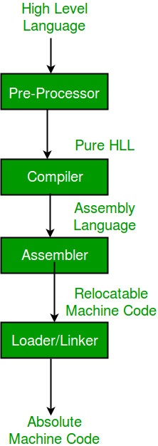
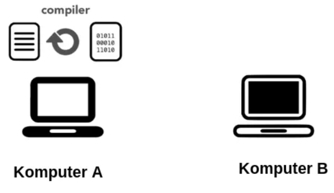
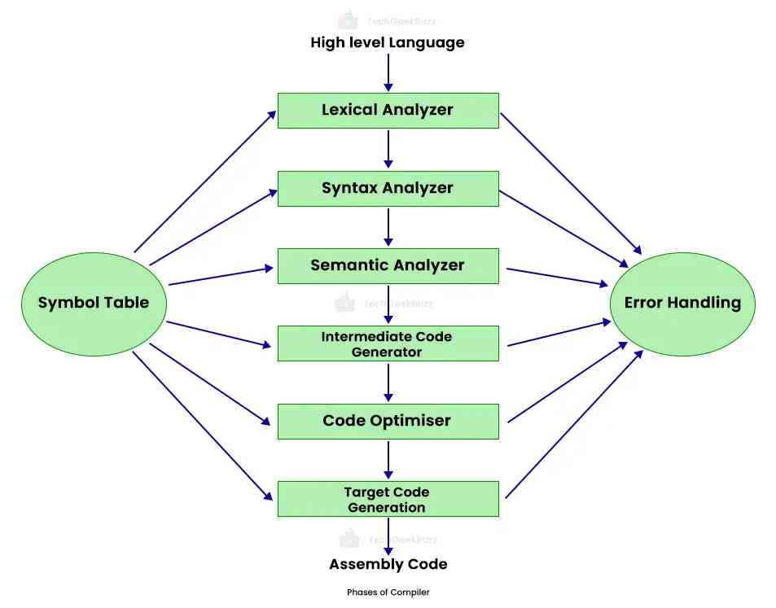
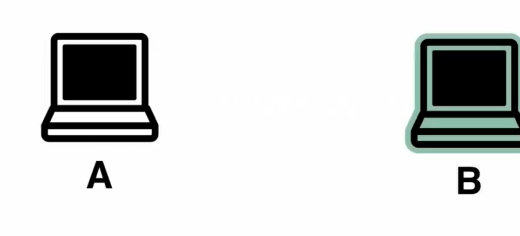
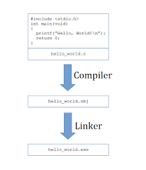

Compiler, Interpreter, Linker
TRANSLATOR

• Dalam konteks bahasa pemrograman, "translator" biasanya merujuk
kepada program atau perangkat lunak yang mengubah kode sumber
dari satu bahasa pemrograman ke bahasa pemrograman lain. Ini
biasanya dilakukan untuk beberapa tujuan seperti portabilitas,
optimisasi, atau integrasi.
• Ada 2 jenis translator utama pada bahasa pemrograman, yaitu
Compiler dan Interpreter.
COMPILER

Compiler
Bahasa yang Menggunakan Compiler:
Contoh Bahasa:
1. C
2. C++
3. Java
4. Swift
5. Rust
Fase Analisis Compiler:
1. Fase Pemindai (Scanner atau Lexical Analysis): Mengonversi urutan karakter menjadi token.
2. Fase Pemrosesan (Syntax Analysis atau Parsing): Memeriksa apakah urutan token sesuai dengan aturan sintaksis.
3. Fase Semantik: Menganalisis makna dari struktur program.
4. Fase Pembentukan Tabel Simbol: Membuat tabel simbol yang menyimpan informasi tentang variabel, fungsi, dll.
5. Fase Pemrosesan Intermediate Code: Membuat representasi internal yang lebih abstrak dari kode sumber.

Compiler
Fase Sintetis Compiler:
1. Fase Optimasi: Meningkatkan kinerja program dengan mengoptimalkan kode intermediate.
2. Fase Pembentukan Kode Target: Menerjemahkan intermediate code menjadi kode objek atau bahasa mesin.
3. Fase Pemutusan (Linking): Menggabungkan kode objek menjadi file eksekusi.
INTERPRETER

Compiler
Interpreter adalah program yang mengeksekusi kode sumber secara langsung tanpa menghasilkan file eksekusi terpisah. Setiap pernyataan dalam kode dieksekusi satu per satu saat program berjalan.
Contoh:
Python, JavaScript, dan Ruby adalah contoh bahasa yang menggunakan interpreter. Python menggunakan interpreter untuk menjalankan skrip Python.
Fungsi:
- Mengeksekusi kode langsung tanpa memerlukan tahap kompilasi terpisah.
- Memudahkan proses pengembangan dan debugging.
Fase Interpreter
1. Pemindai (Scanner): Menerjemahkan urutan karakter menjadi token.
2. Pemrosesan (Parser): Mengevaluasi apakah urutan token sesuai dengan aturan sintaksis.
. Pelaksanaan (Executor): Mengeksekusi instruksi secara langsung atau menerjemahkan ke dalam bentuk intermediate code sebelum dieksekusi.
4. Manajemen Lingkungan Eksekusi: Melacak variabel, fungsi, dan lingkungan eksekusi saat program berjalan.
Perlu dicatat bahwa dalam interpreter, fase analisis dan sintetis bersifat lebih terintegrasi dan cenderung dilakukan secara bersamaan saat program dijalankan. Sebaliknya, dalam compiler, fase analisis dan sintetis biasanya terpisah dalam proses kompilasi.
COMPILER VS INTERPRETER
Compiler dan interpreter adalah dua pendekatan berbeda untuk mengeksekusi kode sumber dalam bahasa pemrograman. Berikut adalah perbandingan antara compiler dan interpreter:
Compiler:
1. Proses Eksekusi:
- Kode sumber diterjemahkan sekaligus sebelum dieksekusi.
- Menghasilkan file biner atau kode objek yang dapat dieksekusi secara terpisah.
2. Keuntungan:
- Kinerja biasanya lebih tinggi karena tidak ada overhead interpretasi selama eksekusi.
- Kesalahan pada tahap kompilasi dapat terdeteksi sebelum program dijalankan.
3. Kekurangan:
- Proses kompilasi memerlukan waktu tambahan sebelum program dapat dijalankan.
- Memerlukan proses kompilasi ulang jika ada perubahan dalam kode sumber.
4. Contoh Bahasa:v
- C
- C++
- Ada
Interpreter:
1. Proses Eksekusi:
- Kode sumber diterjemahkan dan dieksekusi baris per baris saat program berjalan.
- Tidak menghasilkan file eksekusi terpisah.
2. Keuntungan:
- Lebih fleksibel, karena perubahan pada kode dapat langsung diuji tanpa tahap kompilasi ulang.
- Proses pengembangan dan debugging dapat lebih cepat karena tidak perlu tahap kompilasi terpisah.
3. Kekurangan:
- Kinerja biasanya lebih lambat karena ada overhead interpretasi selama eksekusi.
- Kesalahan yang terkait dengan eksekusi mungkin tidak terdeteksi sampai program dijalankan.
4. Contoh Bahasa:
- Python
- JavaScript
- Ruby
Pemilihan Antara Compiler dan Interpreter:
- Kompilasi di Muka (Ahead-of-Time Compilation): Compiler digunakan untuk menerjemahkan seluruh kode sumber sebelum dieksekusi. Keuntungannya adalah kinerja yang lebih baik.
- Interpretasi di Tempat (Just-In-Time Compilation): Interpreter dapat menggunakan JIT compilation, di mana sebagian kode diterjemahkan saat program berjalan. Ini mencoba menggabungkan keuntungan dari kedua pendekatan.
- Hybrid Approaches: Beberapa bahasa, seperti Java, menggunakan pendekatan hibrida dengan kompilasi ke bytecode (intermediate code) yang kemudian diinterpretasikan atau dikompilasi lagi oleh JVM (Java Virtual Machine).
LINKER
